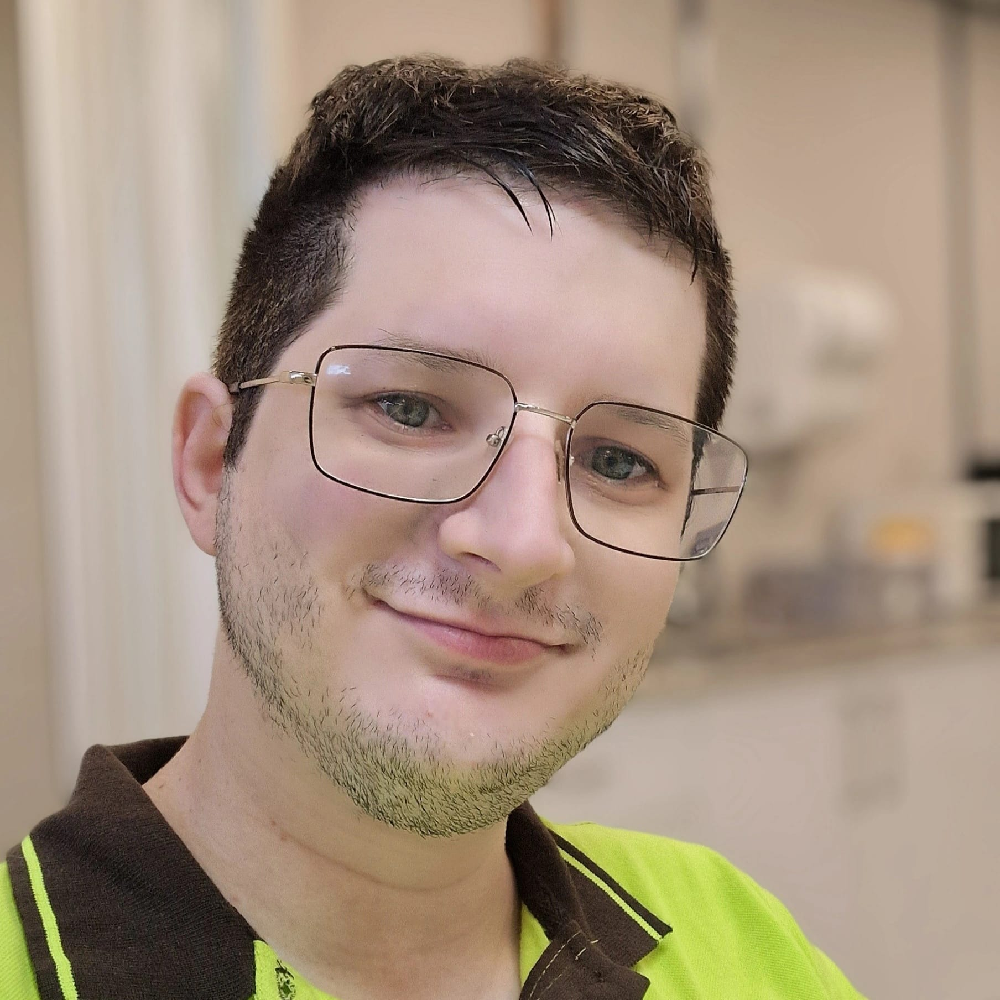

¡Hola! Me llamo Moisés. Soy programador junior y un aficionado a la electrónica, la lectura y la ciencia.
Soy una persona curiosa por naturaleza. Siempre me ha fascinado entender cómo funcionan las cosas desde lo más simple hasta lo más abstracto.
La programación se convirtió para mí en una forma de explorar ese “cómo”, de construir ideas que antes solo existían en la mente y verlas cobrar vida poco a poco.
Me gusta mantener el control sobre lo que hago, comprender cada capa del sistema, desde la lógica interna hasta los detalles más pequeños del rendimiento.
No busco solo que algo funcione, sino entender por qué funciona. Creo que en esa búsqueda de comprensión está la verdadera esencia de aprender a programar.
Disfruto experimentando, desmotando cosas, volviendolas a montar y aprender en el proceso.
Para mí, programar no es solo escribir código: es una manera de pensar, de analizar el mundo con lógica y creatividad a la vez.
Mi objetivo es seguir creciendo como desarrollador, no solo mejorando mis habilidades técnicas, sino también mi forma de ver los problemas.
Me interesa aprender, enseñar y compartir lo que descubro por el camino.
Al final, creo que la tecnología es una extensión de nuestra curiosidad, una herramienta para entender y transformar el mundo que nos rodea, un poco cada día.
Sobre mi
